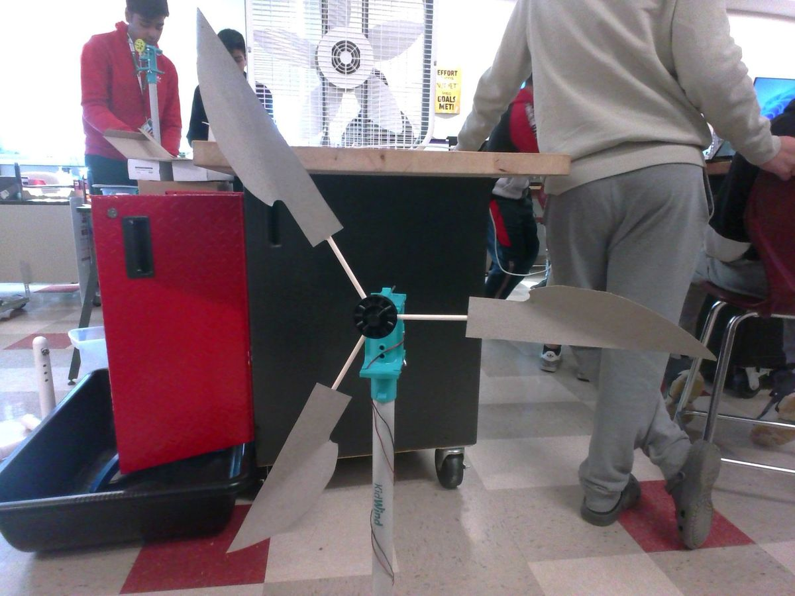
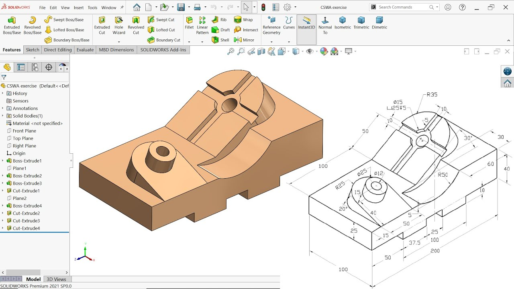
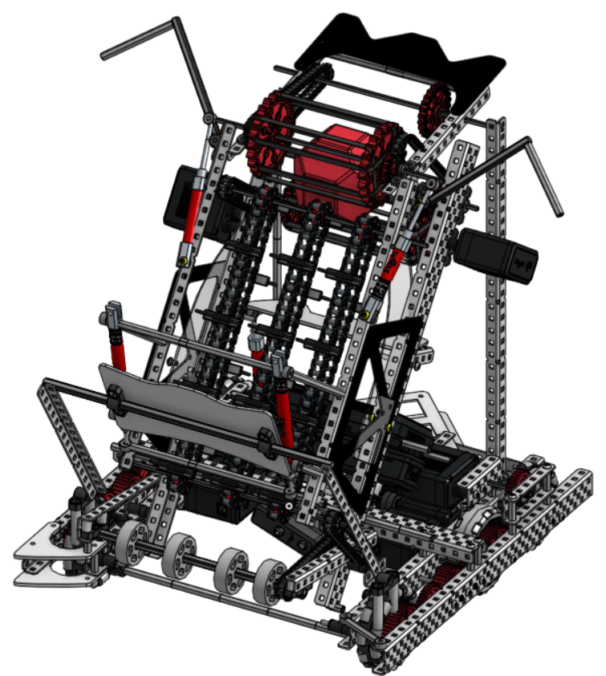

Projects
click around and explore!
Volumetric Display
Engineered a glasses-free volumetric display from the ground up, combining custom optics, embedded firmware, and real-time object tracking to render true 3D imagery floating in mid-air.
Tech Stack / CAD Tools
Electronics Prototyping, Embedded Programming, Optics
View Project Documentation
Click through for the build breakdown — optics setup, embedded rendering pipeline, and live demo footage.

High Stakes Competition Robot Build
Designed a competition-ready chassis in Onshape and AutoCAD, then engineered dual-motor lifters and custom C++ autonomy code to hit pinpoint positioning under match pressure.
Tech Stack / CAD Tools
Onshape, CAD, Robotics, Pneumatics, C++
View Project Documentation
Click through for CAD renders, autonomy logic, and the lift mechanism design behind the build.

Wind Turbine Competition
Ran dozens of blade geometry and pitch-angle iterations to maximize power output at low wind speeds, placing 6th statewide against a field of competing designs.
Tech Stack / CAD Tools
Aerodynamics, Prototyping, 3D Printing, AutoCAD
View Project Documentation
Click through for the blade iteration data, wind-tunnel results, and final competition specs.

SolidWorks CAD to Manufacturing Readiness
Completed 62 official CSWA practice problems across all four certification levels to build production-ready SolidWorks fluency, then pushed select parts further with full GD&T drawings and DFM/DFA reviews for manufacturability.
Tech Stack / CAD Tools
SolidWorks, CSWA, GD&T, DFM/DFA, Feature Modeling
View Project Documentation
Click through to browse individual practice drawings, per-level completion badges, and CAD files as they're added.

Launch Vehicle Project
Designed a 125-foot two-stage orbital rocket end-to-end — structural modeling for aluminum/titanium-composite airframes, paired with MATLAB simulations to optimize stage separation for a 4,500 lb payload.
Tech Stack / CAD Tools
MATLAB, CAD Modeling, Trajectory Analysis, Stress Testing
View Project Documentation
Click through for the full stress analysis, MATLAB trajectory plots, and material selection behind the design.

Arduino Electronics
Built an 8-key synth powered by a single Arduino analog pin, decoding button presses through a custom resistor ladder and mapping them to precise, real-time tone output.
Tech Stack / CAD Tools
Arduino, Circuit Prototyping, C++, Resistor Ladder
View Project Documentation
Click through for the circuit schematic, code walkthrough, and a demo of the synth in action.

Vex Pushback Capstone
Designed a six-motor VEX competition robot in Onshape CAD, modeling and validating the L-shaped intake before a single part was fabricated, then programmed PID-controlled, sensor-based odometry autonomy in C++ — work that earned a Judge's Award and a top 25% finish.
Tech Stack / CAD Tools
Onshape, C++, PID Control, Sensor Odometry, Laser Cutting
View Project Documentation
Click through for the design pivot story, engineering notebook photos, and the full development timeline.

Tower Design Project
CAD-modeled and built an 11" balsa tower that held 45 lbs, over 1,200x its own weight, before failure — applying real-world tolerancing and torsional bracing principles under a strict weight budget.
Tech Stack / CAD Tools
AutoCAD, Balsa Wood Fabrication, Structural Testing, Decision Matrices
View Project Documentation
Click through for the decision matrix, CAD drawings, and load-test data behind the design.

Sensor Challenge
Programmed and tuned an autonomous robot to line-follow a warehouse course and sonar-park precisely between boxes, refining performance through rapid, iterative code and hardware testing.
Tech Stack / CAD Tools
RobotC, Light & Sonar Sensors, Iterative Testing, Flowcharting
View Project Documentation
Click through for the flowcharts, code revision history, and iteration timeline behind both challenges.

Putt-Putt Boat: Straight-Line Redesign
Diagnosed and fixed a straight-line drift bug in a candle-powered jet boat through an offset twin-straw exhaust redesign — 58% faster than baseline, with every design constraint met.
Tech Stack / CAD Tools
Decision Matrices, Technical Drawing, Iterative Testing, Patent Research
View Project Documentation
Click through for the decision matrix, technical drawings, and speed-test data behind the redesign.